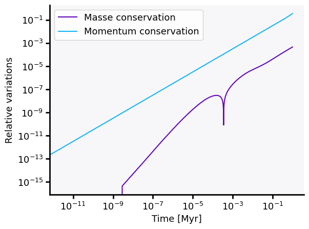
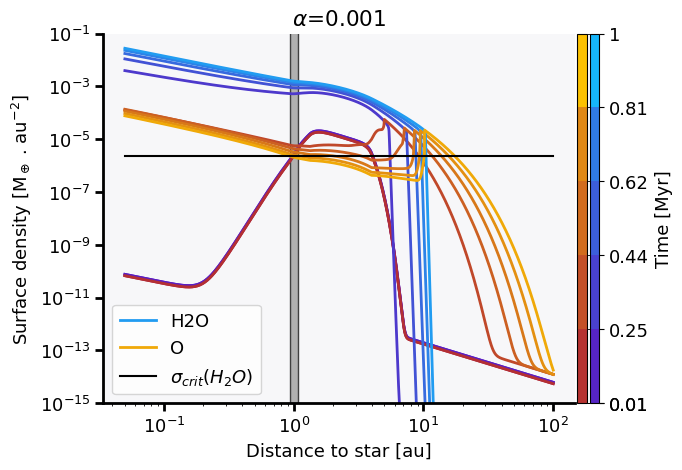
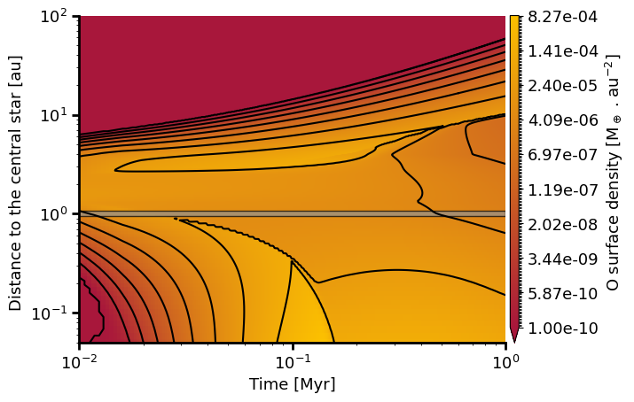
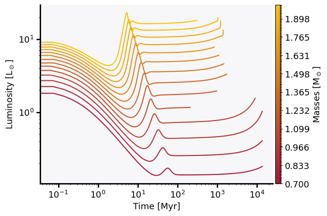

Getting Started
Installation
You can install this library directly using pip:
pip install phenigraph
Alternatively, you can download it from GitLab, after which you will need to compile it. In the main folder, run the following command:
python setup.py bdist_wheel
The installation wheel file will be created in the newly generated dist folder.
To install the library in your local environment, use the following command:
pip install /path/to/wheelfile.whl
Directory and Data Required Before Starting
The library assumes that the working directory has a specific structure. You can change the reference directory and the location of necessary data files by creating a paths.txt file in the working directory.
The required data are:
The water cross-section, which can be found on this page. The file should be saved as
H2O.txtin a directory calledLeiden_database. The name and location of this directory can be changed in thepaths.txtfile.The interstellar spectrum, which can be found on this page. The file should be saved as
ISRF.datin theLeiden_databasedirectory. Several radiation files are available on this page; the standard ISRF works for most cases.The luminosity data. These data are more difficult to obtain, as they must be produced by stellar simulation codes such as cesam2k20. The structure of this file will be described in a dedicated section. Without such files, the luminosity will be assumed to be a constant
Ls, which can be set in a configuration dictionary (see below), and the water photodissociation due to the central star will not be modelled.
All theses datas including luminosity datas (generated by Louis Manchon using cesam2k20 ) can be download here
Directory Structure
The main directory, referred to as racine in the paths file, is assumed to be the current working directory.
It is assumed that this directory contains a subdirectory named Leiden_database, which holds the H2O.txt and ISRF.dat files.
If the user has data modelling the central star, it is assumed to be in a data_star directory inside the main racine directory, in a .npz file called data_fus.npz.
Finally, a Results directory is required to save the Sol objects.
The paths.txt File
If you do not want to work inside the racine directory or wish to organise the data differently, you can create a paths.txt file.
This file is structured as follows:
One line represents one directory.
Each line starts with the name of the directory to be relocated; this can be
racine,Results,data_leiden, ordata_stars.A comma separates this name from the path to the new directory.
Example: Reproducing the default structure.
racine,.
results,./Results
data_leiden,./Leiden_database
data_stars,./data_stars/data_fus.npz
A First Example
In the following sections, we will assume that these libraries are imported with the following names:
import numpy as np
from scipy.integrate import cumulative_trapezoid
import phenigraph as g # To generate plots
from diffenix import time_integration as ti # Only the time_integration submodule is required
All information characterising the system to be modelled, along with details of the models used and numerical settings, should be included in a single dictionary. Examples of such dictionaries are provided with the library and can be adapted as needed.
Setting Up a New Simulation
Let’s start with a disc that initially contains one Earth mass of hydrogen, with no asteroid belts or Kuiper belt, in a solar system-like configuration.
This system contains one planet with the same mass as Earth, located one astronomical unit from its central star.
To achieve this, let’s load the sys_sol_ppd configuration dictionary:
conf_dic: dict = ti.sys_sol_ppd.copy()
sys_sol_ppd is defined as follows in the library:
sys_sol_ppd: dict = {
"racine": racine, "results": results,
"C_L": C_L, "C_M": C_M, "C_t": C_t,
"Ms": Msun, "Ts": np.double(5500.), "Rs": Rsun, "Ls": Lsun,
"a_in": 0.05 * au, "a_out": 100 * au, "a0": 2.65 * au,
"T0": T0, "pls_temp": np.double(-1 / 2), "mH_init": Mearth,
"alpha": np.double(1e-3), "gamma": np.double(1.),
"AB_mdot_st_init": np.double(1e-10) * Mearth / Myr,
"AB_Mbelt": np.double(0.12) * Mearth,
"AB_Abelt": np.double(0.06),
"AB_a0": np.double(2.65) * au, "AB_delta_r": np.double(2.65 / 2.) * au,
"AB_K": np.double(1e-5 * C_L * C_L / C_t), "AB_Phi": np.double(0.6),
"AB_rp": np.double(1e-6 * C_L),
"AB_f_ice": np.double(0.2), "AB_rho_refr": np.double(2.5e3 * C_M / (C_L * C_L * C_L)),
"AB_rho_ice": np.double(1.e3 * C_M / (C_L * C_L * C_L)), "AB_sublimation_model": "none",
"AB_const_mdot": np.double(1e-1) * Mearth / Myr,
"AB_SD_amax": np.double(1.e6) * C_L, "AB_SD_abig": np.double(120e3) * C_L,
"AB_SD_amed": np.double(20.e3) * C_L, "AB_SD_amin": C_L,
"AB_SD_qh": np.double(-4.5), "AB_SD_qm": np.double(-1.2), "AB_SD_ql": np.double(-3.6),
"AB_sb": np.double(316) * C_L, "AB_e": np.double(0.075), "AB_i": np.double(0.075 / 2.),
"AB_As": np.double(5.) * C_E / C_M, "AB_bs": np.double(-0.1), "AB_bg": np.double(0.5),
"AB_t0_diss": 150 * Myr, "AB_t1_diss": Myr,
"KB_mdot_st_init": zero,
"KB_Mbelt": np.double(0.01 * Mearth), "KB_Abelt": np.double(0.06),
"KB_a0": np.double(44) * au, "KB_delta_r": np.double(8) * au,
"KB_K": np.double(1e-10 * C_L * C_L / C_t), "KB_Phi": np.double(0.6),
"KB_rp": np.double(1e-6 * C_L),
"KB_f_ice": np.double(0.2), "KB_rho_refr": np.double(2.5e3 * C_M / (C_L * C_L * C_L)),
"KB_rho_ice": np.double(1.e3 * C_M / (C_L * C_L * C_L)), "KB_sublimation_model": "none",
"KB_const_mdot": zero,
"KB_SD_amax": np.double(1.e6) * C_L, "KB_SD_abig": np.double(120e3) * C_L,
"KB_SD_amed": np.double(20.e3) * C_L, "KB_SD_amin": C_L,
"KB_SD_qh": np.double(-4.5), "KB_SD_qm": np.double(-1.2), "KB_SD_ql": np.double(-3.6),
"KB_sb": np.double(316) * C_L, "KB_e": np.double(0.075), "KB_i": np.double(0.075 / 2.),
"KB_As": np.double(5.) * C_E / C_M, "KB_bs": np.double(-0.1), "KB_bg": np.double(0.5),
"KB_t0_diss": np.double(10.) * Gyr, "KB_t1_diss": np.double(10.) * Gyr,
"a_planets": np.array([au]), "m_planets": np.array([Mearth]), "f_accr": np.double(0.5),
"t0": np.double(5. * Myr),
"IT_s": 3000, "dip": 10, "rtol": np.double(1e-6), "atol": np.double(1e-250), "method_root": 'RK45',
}
Time Integration
Let’s start our first simulation:
sol: ti.Sol = ti.time_integration(tf=ti.Myr, save_time_step=0.1*ti.Myr, consts_params=configs)
The evolution of the disc is modelled from an initial time of zero to a final time of one million years (tf).
The initial time is defined as the point at which the protoplanetary disc dissipates.
This can be set relative to the star’s lifetime in the configuration dictionary via the t0 parameter.
This is only useful if luminosity data are provided for the central star.
The result is saved in a dedicated Sol object, sol.
If the integration stops before the end of the integration time tf, the data will not be lost.
This object is automatically saved to the Results directory at each 0.1 Myr time step.
As there is no Simulation entry in the configuration dictionary, the simulation’s name is generated automatically and displayed when the integration begins.
If the code is run for the first time, it should be Simulation_1. The number will then increase for each new simulation.
A new directory with the simulation’s name should have been created inside the Results directory.
The .npz file containing the Sol object is located inside this directory and is named Simulation_diffusion.npz.
To reload this simulation, follow these steps:
sol = ti.Sol(filename="Simulation_diffusion", directory=ti.results+"/Simulation_1")
Diagnostics
Surface Density
All diagnostics can be run for this simulation.
Let’s begin with the surface density. The Sol object has a specific method that generates a Graphique representing the surface density at different times as a function of the distance to the central star:
gr = sol.graph_surface_density(save=True)
 The argument
The argument save=True means that the graph and the PNG image will be saved in the simulation directory.
If you want to save the Graphique under a different name or in a different location, you can do so by specifying the desired name and location:
gr = sol.graph_surface_density()
gr.filename = "your_new_name"
gr.directory = "your_directory" # To save the plot in the current working directory, you can comment out this line
gr.save_figure(dpi=100) # A 100 dpi PNG image will be saved
gr.save() # The Graphique object will be saved for later reuse (and modification if needed)
Total Mass
It is also possible to access the total disc mass as a function of time:
gr = g.loglog(sol.tps / ti.Myr, sol.total_mass() / ti.Mearth, show=False) # Create the Graphique
gr.config_ax(xlabel="Time [Myr]", ylabel="Total mass [M$_\oplus$]") # Set labels for the x and y axes
gr.show() # Show the plot
gr.filename = "Total_mass"
gr.directory = sol.directory # To save the plot in the current working directory, you can comment out this line
gr.save_figure(dpi=100) # A 100 dpi PNG image will be saved
gr.save() # The Graphique object will be saved for later reuse (and modification if needed)

Mass and Momentum Conservation
To save memory, the saved time steps can be larger than the real time steps. However, the values used for diagnostics are saved at each real time step to monitor mass and momentum conservation:
gr = g.loglog(sol.diag["time"] / ti.Myr, [sol.mass_conservation(), sol.momentum_conservation()],
label=["Mass conservation", "Momentum conservation"], show=False) # Create the Graphique
gr.config_ax(xlabel="Time [Myr]", ylabel="Relative variations") # Set labels for the x and y axes
gr.show() # Show the plot
gr.filename = "Mass_conservation"
gr.directory = sol.directory # To save the plot in the current working directory, you can comment out this line
gr.save_figure(dpi=100) # A 100 dpi PNG image will be saved
gr.save() # The Graphique object will be saved for later reuse (and modification if needed)

Mass Flux
It is possible to obtain the mass flux for an index i of sol.tps. Let’s plot the last one at one million years:
gr = g.loglog(sol.r, [sol.mass_flux(-1), -sol.mass_flux(-1)], label=[">0", "<0"], show=False) # Create the Graphique
gr.config_ax(xlabel="Distance to the central star [au]", ylabel="Mass flux [M$_\oplus$ / Myr]")
gr.show() # Show the plot
gr.filename = "mass_flux"
gr.directory = sol.directory # To save the plot in the current working directory, you can comment out this line
gr.save_figure(dpi=100) # A 100 dpi PNG image will be saved
gr.save() # The Graphique object will be saved for later reuse (and modification if needed)
 As can be seen, there is no outer flux. The boundary condition implies that the outer flux is zero.
There is a sharp decrease in the mass flux in the inner part of the system due to the planet’s accretion of gas.
This can be confirmed by plotting a grey-shaded area on the planet’s sink cells:
As can be seen, there is no outer flux. The boundary condition implies that the outer flux is zero.
There is a sharp decrease in the mass flux in the inner part of the system due to the planet’s accretion of gas.
This can be confirmed by plotting a grey-shaded area on the planet’s sink cells:
sol.add_planets_to_graph(gr, show=True)
gr.save_figure(dpi=100) # A 100 dpi PNG image will be saved
gr.save() # The Graphique object will be saved for later reuse (and modification if needed)
 Similar plots can be created for the radial velocity.
Similar plots can be created for the radial velocity.
The Planet
In addition to the diagnostic values saved at each time step, the mass flux at the outer and inner boundaries of the planet’s sink cells is saved. The accretion rate and the final accreted mass can be deduced from these values.
gr = g.loglog(sol.diag["time"], [-np.array(sol.flux_planets)[:,1,0], -np.array(sol.flux_planets)[:, 0,0]],
label=["Inner flux", "Outer flux"], show=False)
gr.config_ax(xlabel="Time [Myr]", ylabel="Mass flux [M$_\oplus$ / Myr]")
gr.filename = "planet_mass_flux"
gr.save_figure(dpi=100) # A 100 dpi PNG image will be saved
gr.save() # The Graphique object will be saved for later reuse (and modification if needed)
 The shape of
The shape of sol.flux_planets is (len(sol.tps), 2, number_of_planets).
We can then estimate the accreted mass onto the planet as a function of time:
gr = g.loglog(sol.diag["time"],
ti.cumulative_trapezoid(np.array(sol.flux_planets)[:,1,0] - np.array(sol.flux_planets)[:, 0,0],
sol.diag["time"], initial=0.) / ti.Mearth, show=False)
gr.config_ax(xlabel="Time [Myr]", ylabel="Accreted mass [M$_\oplus$]")
gr.filename = "Simulation_ppd_planet_mass"
gr.save()
gr.save_figure(dpi=400)

An Asteroid Belt with a Constant Gas Mass Generation Rate
The previous simulation was initialised with a given mass of hydrogen, and no further mass was produced. There was also only one molecular species.
However, this code can model the evolution of multiple chemical species, from their production at the asteroid belt to their photodissociation.
Let’s start with a simple case involving a constant gas production rate at the asteroid belt level, using the same system as before.
After the evolution of the total surface density, the evolution of the mass fraction of each chemical species is integrated and saved at different times.
To avoid divergence in the numerical integration of this second set of equations, it is recommended that the simulation is initialised with a small amount of water.
This is controlled by the AB_mdot_st_init parameter in the configuration dictionary.
The system is initialised with a steady-state water gas disc and a gas generation rate of AB_mdot_st_init.
In this simulation, there is no primordial hydrogen remaining.
configs = ti.sys_sol_ast.copy()
configs["AB_sublimation_model"] = "constant_rate"
configs["AB_mdot_st_init"] = np.double(1e-10) * ti.Mearth / ti.Myr # Set the initial state
sol = ti.time_integration(tf=ti.Myr, save_time_step=0.1*ti.Myr, consts_params=configs)
Surface Density
Since there are multiple species, the graph_surface_density is a bit more difficult to read:
gr = sol.graph_surface_density(save=True)
 But it is possible to plot only the water and neutral oxygen (the behaviour of neutral hydrogen is very similar to that of neutral oxygen):
But it is possible to plot only the water and neutral oxygen (the behaviour of neutral hydrogen is very similar to that of neutral oxygen):
gr = sol.graph_surface_density(species=["H2O","O"], show=False)
gr.config_ax(ylim=[1e-15, 0.1])
gr.filename = "Surface_density"
gr.directory = sol.directory
gr.save_figure(dpi=100)
gr.save()
gr.show()

The species names are all in capital letters and can be found insol.nom_mu.
To gain a better understanding of how the surface density has changed over time, you can also use a second type of plot:
gr_tot = sol.image_surface_density(save=True, show=True) # For the total surface density
gr_tot = sol.image_surface_density("H2O", save=True, show=True, cmap="default", color_min=g.C1,
color_max=g.C2) # For the water surface density
gr_tot = sol.image_surface_density("O", save=True, show=True, plot_sigma_crit=False, cmap="default",
color_min=g.C17, color_max=g.C13) # For the oxygen surface density



These plots can be used to evaluate changes in surface density over time, such as those in the neutral oxygen levels. For example, it is produced at the beginning of the simulation until the critical surface density is reached. Then, the surface density of neutral oxygen decreases. You can choose a Matplotlib colour bar; the default isinferno. You can also build a custom colour bar from the colour minimum to the colour maximum (the cmap parameter should be set to default).
See the PheniGraph documentation for more information.
Thermal Sublimation Models
There are different models for the gas generation rate. Two are based on gas sublimation by thermal heating.
The first and simplest is referred to in the configuration dictionary as "thermal_diff".
This model assumes that the sublimation timescale and gas diffusion into the asteroid or Kuiper Belt Object (KBO) are negligible.
It only evaluates the mass generation rate by the thermal diffusion timescale, set by the thermal diffusion coefficient K in the configuration dictionary (AB_K and KB_K for the asteroid belt and the Kuiper belt, respectively).
Let’s model a young Kuiper belt similar to that of Huet et al. 2025:
In this simulation, only CO is produced at the Kuiper belt level.
configs = ti.sys_sol_kuip.copy()
configs["KB_sublimation_model"] = "thermal_diff"
sol = ti.time_integration(tf=50 * ti.Myr, save_time_step=ti.Myr, consts_params=configs)
The Configuration Dictionary
Here, we introduce each value needed to build the configuration dictionary. Best practice is to adapt one of the default configuration dictionaries, such as sys_sol_ast, sys_sol_ast_kuip, or sys_sol_appd, rather than building a new one from scratch.
racine→ Path to the root directory.results→ Path to the results subdirectory.C_L:np.float64→ Length conversion unit (cannot differ from the global value; see the Default Unit System subsection to modify the global unit system).C_M:np.float64→ Mass conversion unit.C_t:np.float64→ Time conversion unit.Ms:np.float64→ Central star’s mass.Ts:np.float64→ Central star’s surface temperature (ignored if luminosity data are provided).Rs:np.float64→ Central star’s radius (ignored if luminosity data are provided).Ls:np.float64→ Central star’s luminosity (ignored if luminosity data are provided).a_in:np.float64→ Inner boundary of the integration domain.a_out:np.float64→ Outer boundary of the integration domain.a0:np.float64→ Radius used for the primordial hydrogen distribution (assumed to be the steady state centred ona0).T0:np.float64→ Temperature ata0(ignored if luminosity data are provided).pls_temp:np.float64→ Radial power slope of the temperature.mH_init:np.float64→ Initial mass of primordial hydrogen.alpha:np.float64→ Viscous parameter.gamma:np.float64→ Adiabatic constant.AB_mdot_st_init:np.float64→ Initial steady-state mass generation rate for the asteroid belt.AB_Mbelt:np.float64→ Total mass of the asteroid belt.AB_Abelt:np.float64→ Asteroids’ albedo.AB_a0:np.float64→ Mean semi-major axis of the asteroid belt.AB_delta_r:np.float64→ Half radial width of the asteroid belt (the belt extends fromAB_a0 - AB_delta_rtoAB_a0 + AB_delta_r; ensure that the inner and outer boundaries of the integration domain are smaller/larger than the inner/outer limits of the belt, i.e.,a_in < AB_a0 - AB_delta_randAB_a0 + AB_delta_r < a_out).AB_K:np.float64→ Thermal diffusivity in asteroids (dimension: \([L]^2 . [T]^{-1}\)).AB_Phi:np.float64→ Asteroids’ porosity (dimensionless).AB_rp:np.float64→ Pore radius for asteroids.AB_f_ice:np.float64→ Ice-to-refractory mass ratio for asteroids (dimensionless).AB_rho_refr:np.float64→ Density of refractory materials for asteroids (dimension: \([M] . [L]{-3}\)).AB_rho_ice:np.float64→ Ice density for asteroids (dimension: \([M] . [L]{-3}\)).AB_sublimation_model:str→ Sublimation model; can benone,constant_rate,thermal_diffusion, orthermal_full.AB_const_mdot:np.float64→ Mass generation rate for theconstant_ratesublimation model.AB_SD_amax:np.float64→ Maximum size used for the size distribution of the asteroid belt.AB_SD_abig:np.float64→ Size used for the size distribution of the asteroid belt.AB_SD_amed:np.float64→ Medium size used for the size distribution of the asteroid belt.AB_SD_amin:np.float64→ Minimum size used for the size distribution of the asteroid belt.AB_SD_qh:np.float64→ Power slope of the size distribution betweenAB_SD_amaxandAB_SD_abig.AB_SD_qm:np.float64→ Power slope of the size distribution betweenAB_SD_abigandAB_SD_amed.AB_SD_ql:np.float64→ Power slope of the size distribution betweenAB_SD_amedandAB_SD_amin.AB_e:np.float64→ Asteroids’ mean eccentricity (used by thecollisionssublimation model).AB_i:np.float64→ Asteroids’ mean inclination (used by thecollisionssublimation model).AB_As:np.float64→ Asteroids’ minimum mass disruption energy (used by thecollisionssublimation model; dimension \([L]^2 . [T]^{-2}\)); see Löhne et al. 2008.AB_bs:np.float64→ Slope of the asteroids’ mass disruption energy (used by thecollisionssublimation model; dimensionless); see Löhne et al. 2008.AB_bg:np.float64→ Slope of the asteroids’ mass disruption energy (used by thecollisionssublimation model; dimensionless); see Löhne et al. 2008.AB_t0_diss:np.float64→ Asteroid belt lifetime before disruption begins.AB_t1_diss:np.float64→ Asteroid belt disruption timescale.KB_mdot_st_init:np.float64→ Initial steady-state mass generation rate for the Kuiper belt.KB_Mbelt:np.float64→ Total mass of the Kuiper belt.KB_Abelt:np.float64→ Kuiper Belt Objects’ albedo (dimensionless).KB_a0:np.float64→ Mean semi-major axis of the Kuiper belt.KB_delta_r:np.float64→ Half radial width of the Kuiper belt (the belt extends fromKB_a0 - KB_delta_rtoKB_a0 + KB_delta_r; ensure that the inner and outer boundaries of the integration domain are smaller/larger than the inner/outer limits of the belt, i.e.,a_in < KB_a0 - KB_delta_randKB_a0 + KB_delta_r < a_out).KB_K:np.float64→ Thermal diffusivity in Kuiper Belt Objects (dimension: \([L]^2 . [T]^{-1}\)).KB_Phi:np.float64→ Kuiper Belt Objects’ porosity (dimensionless).KB_rp:np.float64→ Pore radius for Kuiper Belt Objects.KB_f_ice:np.float64→ Ice-to-refractory mass ratio for Kuiper Belt Objects (dimensionless).KB_rho_refr:np.float64→ Density of refractory materials for Kuiper Belt Objects (dimension: \([M] . [L]{-3}\)).KB_rho_ice:np.float64→ Density of CO ice for Kuiper Belt Objects (dimension: \([M] . [L]{-3}\)).KB_sublimation_model:str→ Sublimation model; can benone,constant_rate,thermal_diffusion, orthermal_full.KB_const_mdot:np.float64→ Mass generation rate for theconstant_ratesublimation model.KB_SD_amax:np.float64→ Maximum size used for the size distribution of the Kuiper belt.KB_SD_abig:np.float64→ Size used for the size distribution of the Kuiper belt.KB_SD_amed:np.float64→ Medium size used for the size distribution of the Kuiper belt.KB_SD_amin:np.float64→ Minimum size used for the size distribution of the Kuiper belt.KB_SD_qh:np.float64→ Power slope of the size distribution betweenKB_SD_amaxandKB_SD_abig.KB_SD_qm:np.float64→ Power slope of the size distribution betweenKB_SD_abigandKB_SD_amed.KB_SD_ql:np.float64→ Power slope of the size distribution betweenKB_SD_amedandKB_SD_amin.KB_e:np.float64→ Kuiper Belt Objects’ mean eccentricity (used by thecollisionssublimation model).KB_i:np.float64→ Kuiper Belt Objects’ mean inclination (used by thecollisionssublimation model).KB_As:np.float64→ Kuiper Belt Objects’ minimum mass disruption energy (used by thecollisionssublimation model; dimension \([L]^2 . [T]^{-2}\)); see Löhne et al. 2008.KB_bs:np.float64→ Slope of the Kuiper Belt Objects’ mass disruption energy (used by thecollisionssublimation model; dimensionless); see Löhne et al. 2008.KB_bg:np.float64→ Slope of the Kuiper Belt Objects’ mass disruption energy (used by thecollisionssublimation model; dimensionless); see Löhne et al. 2008.KB_t0_diss:np.float64→ Kuiper belt lifetime before disruption begins.KB_t1_diss:np.float64→ Kuiper belt disruption timescale.a_planets:np.array[np.float64]→ Array of planets’ semi-major axes (one-dimensional array).m_planets:np.array[np.float64]→ Array of planets’ masses (one-dimensional array; ensure it has the same size asa_planets).f_accr:np.float64→ Planets’ accretion efficiency (dimensionless).t0:np.float64→ Protoplanetary disc lifetime.IT_s:int→ Number of spatial steps.dip:int→ Half the number of sink cells around a planet.rtol:np.float64→ Relative tolerance for time integration; see the scipy.integrate.solve_ivp documentation.atol:np.float64→ Absolute tolerance for time integration; see the scipy.integrate.solve_ivp documentation.method_root:str→ Time integration method:RK45,RK23,DOP853,Radau,BDF, orLSODA; see the scipy.integrate.solve_ivp documentation.
Default Unit System
The code uses its own unit system, fully described by the conversion factors from the universal MKSA system.
Only the temperature unit is set to Kelvin and cannot be modified.
There are three main conversion factors: C_L, C_M, and C_t, used to convert any length, mass, or time from metres, kilograms, and seconds to the code’s length, mass, or time units. Multiply the value by the correct conversion factor to perform the conversion.
For convenience, there are derived conversion factors, such as C_F, C_rho, C_E, and C_Lum, to convert force, density, energy, or luminosity from the MKSA system to the code’s unit system.
The default values are:
For time: One code unit equals one million years (hence, \(C_t = 1 / (3600 * 24 * 365.25 * 1e6)\)).
For mass: One code unit equals one Earth mass (hence, \(C_M = 1 / M_\oplus\)).
For length: One code unit equals one astronomical unit.
To convert code values to MKSA units, divide them by the relevant conversion factor. Example:
mass_mksa = mass / C_M
length_mksa = length / C_L
time_mksa = time / C_t
surface_density_mksa = surface_density * C_L * C_L * C_L / C_M
Typical constants can also be used for unit conversion. For example, the constants yr, kyr, Myr, or Gyr can be used to convert times into years, kiloyears, megayears, or gigayears.
It is also possible to convert mass to solar mass by dividing the mass by one solar mass.
The default values were chosen to fit the typical values for our models. However, it is also possible to modify them if needed.
Since Sol objects retain their own conversion factors, they can be loaded with the unit system used to integrate them. All conversions will be performed automatically.
To do this, a new dictionary of constants must be created and saved in the working directory or the racine directory with the name constantes, using the np.savez_compressed method:
new_consts: dict = {
"racine": new_racine, "results": new_results,
"C_L": new_C_L, "C_M": new_C_M, "C_t": new_C_t,
"Ms": new_Ms, "Ts": new_Ts, "Rs": new_Rs, "Ls": new_Ls,
"a_in": new_a_in, "a_out": new_a_out, "a0": new_a0,
"T0": new_T0, "pls_temp": new_pls_temp, "m_dot": new_m_dot,
"alpha": new_alpha, "gamma": new_gamma,
"AB_Mbelt": new_AB_Mbelt, "AB_Abelt": new_AB_Abelt,
"AB_a0": new_AB_a0, "AB_delta_r": new_AB_delta_r,
"AB_K": new_AB_K, "AB_Phi": new_AB_Phi, "AB_rp": new_AB_rp,
"AB_f_ice": new_AB_f_ice, "AB_rho_refr": new_AB_rho_refr,
"AB_rho_ice": new_AB_rho_ice, "AB_sublimation_model": new_AB_sublimation_model,
"AB_SD_amax": new_AB_SD_amax, "AB_SD_abig": new_AB_SD_abig,
"AB_SD_amed": new_AB_SD_amed, "AB_SD_amin": new_AB_SD_amin,
"AB_SD_qh": new_AB_SD_qh, "AB_SD_qm": new_AB_SD_qm, "AB_SD_ql": new_AB_SD_ql,
"AB_sb": new_AB_sb, "AB_e": new_AB_e, "AB_i": new_AB_i,
"AB_As": new_AB_As, "AB_bs": new_AB_bs, "AB_bg": new_AB_bg, "AB_t0_diss": new_AB_t0_diss, "AB_t1_diss": new_AB_t1_diss,
"KB_Mbelt": new_KB_Mbelt, "KB_Abelt": new_KB_Abelt,
"KB_a0": new_KB_a0, "KB_delta_r": new_KB_delta_r,
"KB_K": new_KB_K, "KB_Phi": new_KB_Phi, "KB_rp": new_KB_rp,
"KB_f_ice": new_KB_f_ice, "KB_rho_refr": new_KB_rho_refr,
"KB_rho_ice": new_KB_rho_ice, "KB_sublimation_model": new_KB_sublimation_model,
"KB_SD_amax": new_KB_SD_amax, "KB_SD_abig": new_KB_SD_abig,
"KB_SD_amed": new_KB_SD_amed, "KB_SD_amin": new_KB_SD_amin,
"KB_SD_qh": new_KB_SD_qh, "KB_SD_qm": new_KB_SD_qm, "KB_SD_ql": new_KB_SD_ql,
"KB_sb": new_KB_sb, "KB_e": new_KB_e, "KB_i": new_KB_i,
"KB_As": new_KB_As, "KB_bs": new_KB_bs, "KB_bg": new_KB_bg, "KB_t0_diss": new_KB_t0_diss, "KB_t1_diss": new_KB_t1_diss,
"a_planets": new_a_planets, "m_planets": new_m_planets, "f_accr": new_f_accr,
"t0": new_t0,
"IT_s": new_IT_s, "dip": new_dip, "rtol": new_rtol, "atol": new_atol, "method_root": new_method,
}
np.savez_compressed(racine + "/constantes.npz", **new_consts)
The current constants dictionary can be loaded using the constantes() method, which can then be modified.
When converting units, ensure that all resulting values are also converted, as every value in the constants dictionary is in code units.
The Luminosity File
The central star’s luminosity is a key parameter for estimating the mass generation rate at the belt level in the thermal_full model.
It is also important for estimating the photodissociation rate.
However, the central star’s luminosity can vary significantly in the early stages of a system’s life, when secondary gas production is assumed to occur (see Kral et al. 2024 for the solar system and Figure 1).

Figure 1: Evolution of stellar luminosity as a function of time for different stellar masses.To provide the required data, you must first run stellar simulations (for example, using cesam2k20).
These simulations must be performed for several masses (as many as possible to obtain reliable interpolation).
All data should then be merged into a single .npz file created using np.savez_compressed.
This file must contain the following keys associated with arrays of the same size:
Age: Array containing the star’s age in Myr at each point.M: Star’s mass in solar masses (must be constant for each star) at each point.Lbol: Bolometric luminosity at each point in solar luminosity.R: Star’s radius in solar radii at each point.Reuv_3692: Luminosity fraction in the UV.Reuv_lya: Luminosity fraction in the UV.